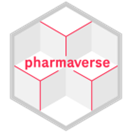
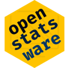
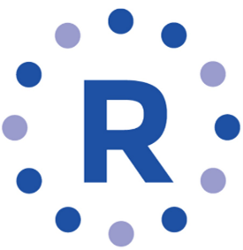

Introduction to PSI AIMS SIG
One of PSI AIMS SIGs objectives is to support and contribute to working groups researching and developing tools that will help us use R in Pharmaceutical research. These wide ranging working groups focus on replication across software, development of packages and tools, application of statistical methods in R and R submissions. This article introduces you to some of the most popular working groups, whose collective remit is to encourage and support the use of R in regulatory research. PSI AIMS SIG actively supports these projects so check out what each does below and become active by joining PSI AIMS SIG or one or more of the projects!

Introduction to PHUSE CAMIS
CAMIS (Comparing Analysis Method Implementations in Software) is a PHUSE DVOST working group (WG) who have built an open-source repository containing guidance on the application of statistical methodology and replication of analysis methods across various software (including SAS, R and Python).
Previous industry reliance on SAS® software, resulted in a dependence on SAS® software default methods, and a lack of understanding about exactly how SAS implements various analysis methods. Statistical analysis plans (SAPs) are often written without full specification of the method. This may not be an issue, if all analysts use SAS, however when CROs, Sponsors and Regulators are trying replicate each others' analysis, it's vital to fully specify how each method will be implemented, such that it can be replicated using any software and removing any ambiguity in the intended analysis method to be used.
This project was initially set up by PHUSE as the 'CSRMLW' WG, but leadership was taken over by PSI AIMS SIG members, who initiated a name change to: 'Comparing Analysis Method Implementations in Software'. CAMIS WG found that when the same methods are used, then replication is often easy, but finding out exactly what method is being used by each software can be very time consuming. A simple example would be using a Kaplan-Meier method to estimate the median time to death with 95% confidence interval (CI), the analyst needs to specify how to calculate the CIs. The SAS default (log method) is not the same as the R default (log-log method) and often the method to use is not specified in the SAP! Another example, is cox-proportional hazards modelling. The analyst should always state whether to use the SAS default method for tied observation times (Breslow) or the R default method (Efron) or another method! Even logistic regression modelling, which is commonly used to obtain odds ratios and CIs, requires the analyst to specify if we are using SAS default (Wald CIs) or R default (Profile likelihood CIs). A lack of clear specification of methods, can result in an inability to reproduce the same results in different software. Especially as not all options are available in all software (e.g. SAS cannot calculate profile likelihood CIs using proc logistic!).
Other examples of replication issues include a lack of clarity in SAS® documentation for example; proc rmstreg, it states a default tau=maximum event time will be used, but it actually implements the maximum of the event or censoring time. CAMIS helps users to ensure correct model specification to avoid common pitfalls when software documentation is incorrect or unclear.
CAMIS also improves confidence in packages, through bug fixing. CAMIS identified a bug in R {RBesT} package for a specific use-case of 0% or 100% responders, resulting in a lack of replication of this package vs other packages and SAS. CAMIS worked with the authors, and the package was fixed and re‑released on CRAN as v1.8-0. When doing Confidence intervals for proportions, there was no single package that did all the common methods needed. For some methods, {DescTools} – a miscellaneous basic stats package unlikely to be acceptable for GxP environment was the only option. CAMIS highlighted this issue to the industry, and work has begun to create a new package {citools} to meet this missing R functionality and industry need.
CAMIS applies a variety of use-case studies, in an attempt to replicate results across software. This provides the reader with 10 advantages!
1) an easy-to-read guide for common medical research analysis in R, SAS and python,
2) a comparison of results across the software,
3) rationale for why differences exist (default options vs available options),
4) common mistakes when interpreting the documentation which aids the user to correctly implement methods in programming code,
5) details regarding background methodology (including use of continuity corrections or convergence methods) which can be highly technical statistically and often not well documented,
6) identified bugs that exist in the software, gives advice re: workarounds or avoidance or works with authors to fix bugs improving quality of software
7) identifies missing requirements in R, and collaborates to author new packages to fill these GxP needs.
8) provides reassurance and confidence in the software (and packages) being used through cross software replication
9) Highlights alternative open-source trusted macros, (for example, if procedures are not available in SAS, there may be SAS macros published that can be used).
10) provides time saving trustworthy guidance to avoid duplication of effort within the medical research industry
Topics within the repository covered to date include, basic statistics, general linear models, generalized linear models, multiple imputation, survival modelling, non-parametric analysis, categorical data analysis, repeated measures, sample size and machine learning.
CAMIS is an open source collaboration, and with your help, the repository will continue to grow in content and be a vital source for medical statisticians and programmers. See CAMIS - A PHUSE DVOST Working Group for the repository or how to Get Involved.

Introduction to the pharmaverse
pharmaverse is a connected network of companies and individuals working to promote collaborative development of curated open source R packages for clinical reporting usage in pharma, in a space where previously we would only ever have worked in silos on our own closed source and often duplicative solutions
Historically, when the majority of pharmaceutical companies and CROs were using SAS, each company developed it own set of SAS macros and tools aimed to improve for their company, the efficiency of clinical trial reporting in the regulatory environment. This came with a number of challenges:
1) New employees were not familiar with the inhouse systems or macros resulting in time consuming onboarding training
2) Substantial investment had to be made by each company in order to develop and maintain internal processes and systems
3) Processes and tools were slow to change or to modernize to new technology
With the ever increasing costs of clinical trials, companies needed to find cost saving methods, to adapt to survive, and hence started to get innovative with how new technology or software could help with this. R's open-source ecosystem and modular, build and extend model framework, led to a positive shift in the mindset of developers. The realization that collaboration across companies not only leads a reduction in duplicated effort but also to a cycle of continuous feedback, improvement, advancement and increased efficiencies for all. The companies who were early adopters of R, started to release their in-house developed packages, into the open source environment, and to invite community contributions and open source continual development. And Thus!! The Pharmaverse was born.
The collection of End-to-End Clinical Reporting Packages, provides tools for SDTM, ADaM, TLGs, e‑submissions, metadata handling, utility packages, and other useful tools, key to reporting of clinical trials and submissions. Continual development of existing and new packages takes place in github repositories, where the community can raise issues (suggestions for enhancements or bugs) and collaborate on new version releases. The benefit to the pharma community is multi-faceted
1) If companies use open source tools then less onboarding of new employees is required
2) Collaboration allows for a larger pool of available talent to achieve more together, continually challenging the status quo and making improvements
3) Community development helps to standardize processes improving efficiencies
In addition to packages that support production of TLGs, pharmaverse also contains a TLG Catalog - Stable. This extensive catalog of common TFLs (including example for: AEs, conmeds, deaths, demography, ECGs, Efficacy, Labs, Medical History, PK and vital signs), is extensive. It is yet to be seen if further cross company TLGs standardization is achievable, as if it were, it would radically reduce replication of efforts. Seepharmaverse for more information.

Introduction to openstatsware
openstatsware is a scientific working group of the American Statistical Association (ASA) Biopharmaceutical section (BIOP) and a European Special Interest Group (SIG) sponsored by Statisticians in the Pharmaceutical Industry (PSI) and the European Federation of Statisticians in the Pharmaceutical Industry (EFSPI).
Their goals are to:
1) Engineer selected R-packages to fill in gaps in the open-source statistical software landscape
2) Develop good software engineering practices
3) Communicate, collaborate and promote their work in the community
The skillset of a statistician was traditionally very different to that of a software engineer. Statisticians developing statistically technical R packages often released good quality packages, but ones that lacked a clear software development lifecycle and associated good practices such as adequate code coverage testing. With the rapid interest in using R for regulated medical research, it became apparent that some of the common analysis performed standardly for clinical trials in SAS, was not easily available in R.
Given that the average statistician would be very daunted by the prospect of developing a new R package, there was concern that this may be holding back the development of much needed statistical methods packages. Openstatsware writes articles and delivers presentations on good software engineering practices, in addition to identifying gaps in our software tools and setting up workstreams focusing on developing solutions to fill these gaps. They currently have four workstreams:
MMRM: Mixed models for repeated measures are a popular choice for analyzing longitudinal continuous outcomes. However, the models come with a wide range of methods and techniques such as a choice of covariance matrices, weightings of observations, fitting models with restricted or standard maximum likelihood inference and performing hypotheses testing with Satterthwaite or Kenward-Roger adjustment. There was an unmet need in R, making it hard to fit MMRMs and reproduce analysis performed in SAS. The {mmrm} package release filled this gap, and has become the go-to package for all R users fitting MMRMs in the pharmaceutical industry and beyond.
Bayesian MMRM: following the release of R package {mmrm}, it was clear that although {brms} was powerful, an additional package was needed to leverage that to run MMRMs. The release of the R package {brms.mmrm} filled that gap, enabling users to fit Bayesian repeated measurement models.
HTA-R workstream: this workstream's objective is to develop open-source R tools of good quality in the right formats (R packages, apps, user guides) that are useful to both manufacturers and payers, to support crucial analytic topics in HTA dossier submission across various countries, particularly the topics with unmet needs in R implementation and/or related to EUnetHTA.
Bayesian Safety Signal Detection Julia Package: this workstream's objective is to develop a Julia package for Bayesian Safety Signal Detection based on the Brock et al (2021) method.
See openstatsware for more information.
Introduction to the R Validation Hub
R Validation Hub is a cross-industry initiative whose mission is to enable the use of R by the Bio-Pharmaceutical Industry in a regulatory setting, where the output may be used in submissions to regulatory agencies.
One of the earliest working groups initially set up by the PSI AIMS SIG in 2018 to investigate what was preventing the pharmaceutical industry using R, the R Validation Hub has gone on to provide the community with a number of ground-breaking deliverables.
White paper. In 2020, they released a white paper which introduced the concept of a risk-based approach to assessing R packages. The framework quickly attracted wide industry agreement, that there is minimal risk in using Core R (base + recommended) packages for regulatory research. The hub showed how Core R, plus a pipeline for risk based assessment of contributed packages and controlled access of packages, can collectively be used as a GxP approved R environment. A Risk-based Approach for Assessing R package Accuracy within a Validated Infrastructure Nicholls, Bargo, Sims (2020).
{riskmetrics} package and {riskassessment} app. A further problem was how we can assess package risk and collect metrics on packages. {riskmetrics} provided one solution to this problem, scraping data from a variety of sources and providing a summary of 'trustworthyness' based on both maintenance metrics and community usage metrics. The accompanying {riskassessment} app reported these metrics in a visually appealing way, also allowing a report to be output which could be saved for documentation of decisions made about packages.
During 2022-2023 a series of R adoption talks and case studies provided a transparency rarely seen previously in pharmaceutical research. These talks made public many companies plans and methods to start to do statistical analysis reporting in R and/or transition to R fully.
The R validation hub is still identifying and addressing issues and challenges with R implementation, and offers a range of free webinars throughout the year encouraging discussion and collaboration on a range of topics. See R Validation Hub for more information.

Introduction to R Consortium R Submission Pilot
R Submission Pilot: focusing on IT and platform challenges, their goal is to identify and address issues in order to make 'all R' regulatory submissions
This working group have worked through a number of pilot submissions, in order to identify and address issues associated with doing regulatory submissions to the FDA using R alone. Their initial pilot submission in Nov 2021, focused on the delivery of Tables and Figures which had been produced using R. Their second pilot delivered the same tables and figures, but the submission included a Shiny App for the output creation within the submission package. The third pilot demonstrated production of both ADaM and TFLs using R. Pilot 4 is still in progress, exploring use of novel technologies such as Linux containers and web assembly to bundle a Shiny application into a self-contained package, facilitating a smoother process of both transferring and executing the application. Pilot 5 is planned for November 2025 and will explore delivery of datasets in datasetjson files instead of xpt. See Introduction – R Submissions Working Group for more information.
Introduction to R Consortium R Tables for Regulatory Submissions (RTRS)
Goal is to create standards for creating tables that meet the requirements of FDA submission documents, and hence enhance the suitability of R for FDA submissions
This working group was set up to demonstrate best practices and standards for the creation of TLGs in R, that would meet the requirements of submissions. Their detailed bookdown Tables in Clinical Trials with R describes packages that aid production of TLGs also addresses requirements such as titles, footnotes, captions, pagination and rendering. Commonly used tables are demonstrated showing the code and outputs. The activity of this group has been quite since mid 2024, likely due to the rapid advancement of pharmaverse TLGs and the associated TLG Catalog - Stable.